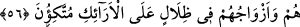
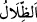
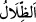
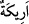
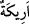
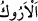
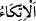

56. Onlar ve eşleri gölgeler altında tahtlara kurulurlar.
“Onlar” cennet ehli “ve eşleri” dünyadaki hanımları yahut cennet hûrileri, dostları
“gölgeler altında tahtlara kurulurlar.”
Bu âyet cennet ehlinin nimet ve safâ içindeki meşguliyetlerinin keyfiyetini, içinde
bulundukları nimet ve safâya eşlerinin de ortak olmasının onların sevinç ve
mutluluklarını artırarak erdikleri safâ ve nimetleri tamamladığını beyan etmek için sevk
edilmiş bir başlangıç cümlesidir.
Buradaki “eşler”den maksad, onların dünyadaki eşleridir. Ya da iri gözlü cennet
hurileridir. Yahut da cennet ehlinin yakın dostlarıdır. Nitekim Allah Teâlâ buyuruyor:
“Zâlimleri ve onların aynı yoldaki arkadaşlarını … toplayın.” (es-Sâffât, 37/22)
Bunların hepsinin murâd edilmiş olması da mümkündür
“Eşleri” ifâdesi onların yalnız olmadığına işârettir. Çünkü tek ve yalnız olan kimse
mertebelerin en yücesinde bile olsa yanında tanıdık birisi olmazsa yalnızlık hisseder.
Görmez misin ki Peygamberimiz (s.a.) mi’rac gecesinde Cebrail (a.s.) kendi bulunduğu
makamda O’ndan ayrılınca yalnızlık hissetti. Bunun üzerine Ebû Bekir (r.a.)’ın sesine
benzeyen bir ses işitti de bu yalnızlık hissi ondan kayboldu. Çünkü Peygamberimiz (s.a.)
Ebû Bekir (r.a.)’a ünsiyet etmişti ve bütün vakitlerinde onunla beraber olurdu. Yine bu
hususla ilgili olarak Hz. Peygamber (s.a.) kişinin yalnız başına bir evde gecelemesini
yasaklamıştır.[158]
“Gölgeler altında tahtlara kurulurlar.” “
” kelimesi “ ”in çoğuludur. Gölge
güneş gören yerin zıddıdır. Ya da “
” kelimesi “
” kelimesinin çoğuludur. “
”
kişiyi güneşten örten örtüdür. “
” kelimesi, “
”nin çoğuludur. Gelin için elbise ve
örtülerle süslenen gelin odası karyola, divan yatak ve bazadır. Nitekim el-Kâmûs’ta
böyle geçmektedir. el-Muhtâr’da ise şöyle der: “
” ev ya da odada süslenmiş
vaziyette hazırlanmış koltuk demektir. Eğer orada sedir olmazsa “kameriye” denir. “
” denilmesi bu sedirin eraktan (misvak ağacı) yapılmış olmasından dolayıdır. Ya da
ikamet yeri olduğundandır. Çünkü “
” aslında misvak ağacını gözetmek için ikamet
etmek demektir. Sonra mecaz olarak bütün ikametlerde kullanılmıştır. “
” dayanmak,
yaslanmak demektir.
Yani onlar kameriyelerde gölgelerde odalarda tahtlara yaslanırlar. Tahtlara yaslanmak
nimetler içinde olmaya ve dinlenmeye/rahatlığa delildir.
Keşfü’l-esrâr’da der ki: “Mânâsı şöyledir: Onlar ve eşleri gölge altındadır. Onlar
için binâlar ve çadırlar yapılmıştır. Çadırlar beyaz incidendir. Alanı on altı fersahtır.
Yüksekliği altmış mildir. Çadırın içine tahtlar, karyolalar konulmuş. Her bir tahtın
yüksekliği üç yüz gezdir/kol boyudur. O cennetlik kimse o tahta çıkmak istediğinde, taht
yere yayılır. Böylelikle o cennetlik sıkıntısız, rahatça tahtın üzerine oturur.”